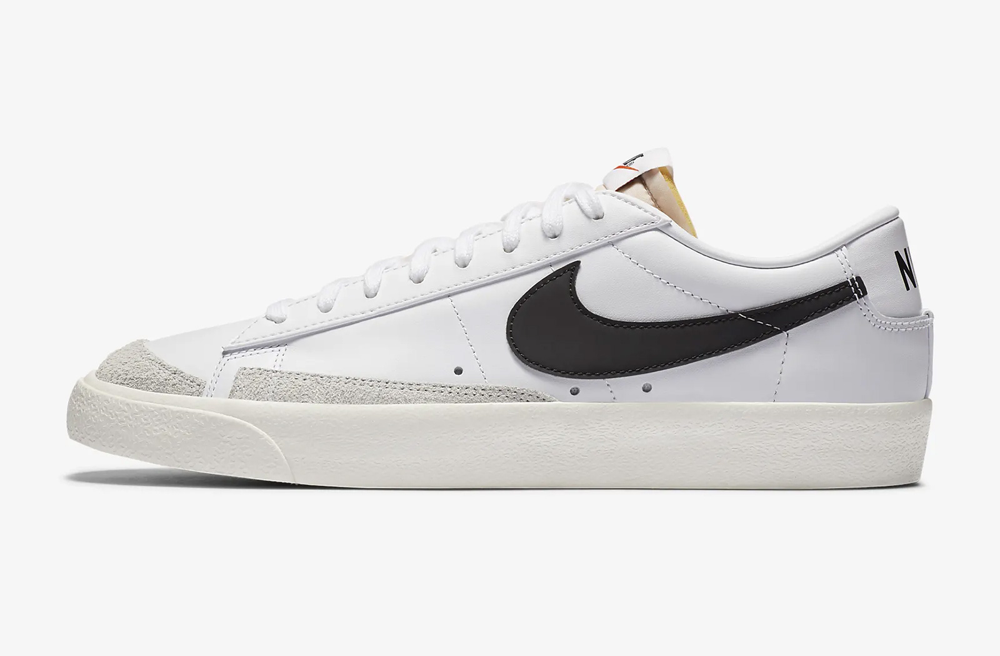

Описание
Популярная модель Nike Blazer Low '77 Vintage, признанная на улицах благодаря своей классической простоте и комфорту, возвращается в исходном низкопрофильном дизайне, ориентированном на баскетбольный силуэт. Этот вариант обуви включает в себя элементы из роскошной замши, ретростильный логотип Swoosh и мягкие бортики, которые станут неотъемлемой частью вашего гардероба. Изначально разработанная для достижения выдающихся результатов на баскетбольной площадке, модель Nike Blazer Low обеспечивает прочность и комфорт. Она практически полностью повторяет оригинальный дизайн, с верхом в ретро-стиле, выполненным из кожи, мягкой замши и синтетических материалов для повышенной долговечности